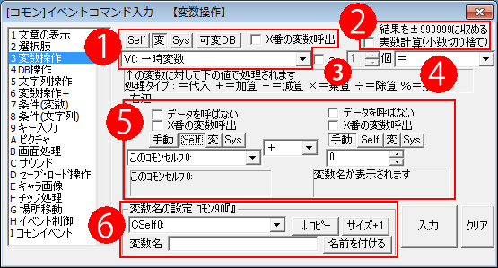

イベントコマンド 【変数操作】
指定した変数の値を変更したり、計算を行ったりできます。

※計算の注意点：
WOLF RPGエディターでは処理高速化のため、「コモンイベント」中に限って変数操作では数値の限界値処理をしていません。
これによって一体どうなるかというと、たとえば数値を足していって2,147,483,647の限界値を超えると、
オーバーフローして数値が-2,147,483,648になってしまうのです。
コモンイベント中では、±20億を超えない組み方を行ってください。
マップイベント中ではこの問題は起きず、常に±20億の値におさめられます。
→ なお、変数操作のどれかのチェックボックスに1つでもチェックが入っていたり、数値・セルフ変数・通常変数以外の
変数を使用した場合はこの「高速化」が行われないため、上下限は±20億までになります。
【各部の説明】
１．代入先の指定
代入先の変数を選択します。
・Self/変/Sys/可変DB … 代入先の種類を選択します。前からセルフ変数/通常変数と予備変数/システム変数/可変データベース、です。
・X番の変数呼び出し … 「呼び出した変数の値」の変数を呼び出します。たとえば「通常変数0番」を指定したときに通常変数0番に2000005（通常変数5番を表す値）が格納されてれば、最終的に「通常変数5番」を代入先とします。
２．変数操作オプション
・結果を±999999に収める … 値の増減が起きても変数の領域（100万以上）に踏み込まないようにします。変数の値が100万を超えると別の変数の値を呼び出してしまうため、それを避
けるためのチェックです。これをオンにすると、結果の値が100万以上になると999999に、-100万以下だと-999999に変更します。
・実数計算（小数切り捨て） … これをオンにしていると、内部処理を一時的に小数点以下まで見て計算します。たとえば、「100 *= 3/2」という計算をしたとき、実数計算オンにしていれば「100 *= 1.5」で結果が150になりますが、実数計算をオフにしてると内部的に「100 *= 1（整数計算すると3/2 = 1として扱われる）」となるので結果が100になります。戦闘の計算式などで特に重要になると思います。
３．～ 「」個 オプション
複数の変数に対して一斉に処理を行いたい場合、このオプションをオンにします。
たとえば「V0（通常変数0番）」から「4」個処理するように指定すると、「V0～V4」までの変数に対して同時に処理を行うことができます。
４．代入演算子
代入の仕方を指定します。「＝」「＋＝」「－＝」「×＝」「÷＝」「％＝」「引上げ」「引下げ」「絶対値」「角度x10←傾き」「sin[x1000]←角度x10」「cos[x1000]←角度x10」「√[x1000]」から選択可能です、詳しい説明は「計算式の説明」をご覧下さい。
５．代入する値
ここで代入する値を指定します。2つの変数または整数値を同時に処理することができます。
文字列変数を指定するとその文字列を数値に変換します。ただし、正常に読み込めるのは文字列先頭から始まる文字列に限ります。
・手動/変/Sys/可変DB … 読み込む値の種類を選択します。手動で各々の変数を呼び出すコードを入れれば切り替えなくても構いません。
・データを呼ばない … 100万以上の数値を入れても変数を呼ばず、そのままの整数値として扱います。
・X番の変数呼出 … 1の「X番の変数呼出」と同様です。
６．変数名の設定
この欄で変数に名前を付けたり、変数の最大数を増やしたりすることができます。設定したい変数をプルダウンリストから選び、設定したい名前を入力したら「設定」ボタンを押してください。
「↓コピー」ボタンは、プルダウンリストで選択中の変数の名前を、下の「変数名」にコピーします。
「サイズ+1」ボタンは、プルダウンリストで選択中の変数種の最大数を一つ増やします。例えば、「V3-1」（予備変数3の1番）が表示されているときに「サイズ+1」ボタンを押すと、予備変数3の変数最大数が一つ増加します。
「文字入力欄」にカーソルが当たってる状態で、次のようなショートカット キーが使用できます。
- 上下キー … 名前を変えたい変数を切り替える
- Enterキー … 名前を設定 ・ 「名前を付ける」ボタンを押したのと同じ
- Shift + ↓ … 対象変数の名前を名前欄にコピー 「↓コピー」ボタンを押したのを同じ
- Shift + ← … 名前欄をクリアする
※「クリア」ボタン … 入力された内容をリセットします。
【特殊な機能の解説】
・文字列を数値に変換できる。
右辺の値に文字列変数（例：3000000/文字列変数0番など）を指定すると、
その文字列を数値に変換して処理できる機能があります。
ただし、正常に読み込めるのは文字列先頭から始まる半角数字に限ります。
（例：文字列「234」なら正常に234になるが、「82g1A」は82に、「A42」は0になってしまう）
※外部テキストファイルにデータ出力した内容を読み込みたい場合や、
一つの文字列変数に大量に数値を保存して読み込む場合などに便利だと思います。
→ 文字列から数値に直した瞬間の値は、どんな大きな値でも
-2,147,483,648 ～ 2,147,483,647内の範囲におさめられます（Ver3時点の挙動）。
その後、最終的な計算結果が±20億を超えていた場合は最終値が±20億におさめられます。